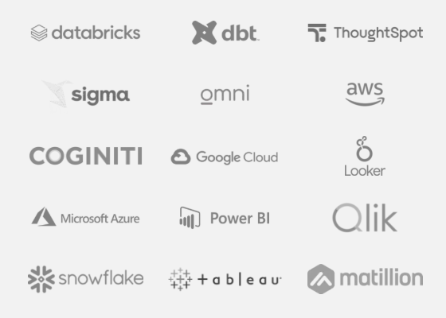

Performance
Which metrics truly represent organizational performance?

KPI Strategy & Executive Reporting
Parallax turns scattered measures into a working executive reporting system: a governed KPI layer, an executive scorecard, an automated reporting workflow, and documentation that makes definitions, ownership, thresholds, and follow-up clear.

Executive KPI systems
Many organizations have dashboards filled with metrics but lack a consistent operating model for how those metrics are reviewed, interpreted, and acted upon.
Effective KPI reporting is not just about tracking numbers. It requires clear ownership, standardized definitions, meaningful targets, and a process for turning insights into action.
Which metrics truly represent organizational performance?
Who owns each KPI and is accountable for results?
When should leadership pay attention to a changing trend?
What actions should follow when performance falls outside expectations?

Platform experience
We work across the modern data and analytics stack so KPI definitions, governed metric layers, scorecards, and automated reporting workflows hold together from source to executive view.
Where this applies
A concise leadership scorecard with trend, target, confidence, owner, commentary, and the decision or action each exception should trigger.
Governed revenue, margin, cash, forecast, and variance logic aligned across finance systems and executive reporting.
Throughput, backlog, capacity, quality, and service measures connected to operating thresholds and accountable owners.
Pipeline, conversion, bookings, retention, and customer measures built from consistent definitions and a repeatable reporting workflow.
Controlled scorecards that document source, calculation, evidence, owner, review cadence, and exception follow-up.
How to think about the work
Parallax does more than facilitate metric conversations. We define and govern the metric layer, build the executive scorecard, automate the reporting workflow, document calculation and ownership rules, and connect the output to the meeting cadence where leaders act.
The engagement can begin with one scorecard or expand across a leadership reporting portfolio. We identify definition drift, assign owners, build governed measures and reporting views, automate repeatable preparation and distribution, and leave the team with operating documentation that supports ongoing use.
Leaders receive a smaller, governed metric set with accurate calculations, visible owners, consistent reporting logic, and a scorecard cadence that directs attention to material movement and accountable action.
How the work is delivered
The engagement is organized around concrete work products, implementation decisions, and the operating controls needed to keep the result useful.
Clarify calculations, source systems, timing, exclusions, and interpretation rules for the KPIs that drive decisions.
A KPI record compares the current calculation with the intended business rule, source grain, time zone, exclusions, refresh timing, and expected decision use.
Name who owns each metric, who can approve changes, and who explains movement when leadership asks why.
An ownership matrix separates the business definition owner, technical logic owner, source owner, and action owner for every priority KPI.
Build the executive scorecard or dashboard with trend, target, owner, confidence, commentary, and action context.
A leadership view shows current value, target, trend, confidence, owner, commentary, and the action expected when a threshold is crossed.
Implement reusable KPI logic in the semantic or reporting layer so scorecards and downstream reports use consistent definitions.
Certified measures move repeated KPI logic into one governed semantic layer used by scorecards and downstream reports.
Automate repeatable preparation, refresh, quality checks, and distribution for the executive reporting cycle.
A scheduled workflow prepares the data, validates completeness, refreshes the scorecard, and distributes the approved view on the leadership cadence.
Deliver definition records, source and calculation notes, owners, thresholds, limitations, and change-control guidance.
A searchable metric catalog records calculation logic, sources, timing, grain, inclusions, exclusions, limitations, owners, and change history.
Connect the reporting cycle to operating meetings so metrics create action instead of passive status updates.
A weekly or monthly review agenda connects each metric exception to a decision, owner, due point, and escalation path.
Refactor measures, labels, pages, and semantic-model logic when Power BI is the main reporting layer.
Duplicated measures are reconciled, labels and formats standardized, model logic simplified, and deprecated report-level calculations removed.
Define what movement matters, what is noise, and when the team should escalate or act.
A threshold table distinguishes normal variation, watch conditions, intervention triggers, and the business response expected at each level.
Anonymized case study
Time-zone decision record, UTC-to-local transformation specification, boundary-case validation table, corrected KPI definition, owner approval, and before/after reconciliation view.
Modern analytics readiness
Copilot and AI reporting are only dependable when KPI definitions are consistent, semantic logic is reusable, owners are clear, metadata is understandable, and access rules are enforced. Governing the metric layer improves both human reporting and AI-generated answers.
Questions
Usually the first step is cleaning the existing set. Most teams already have enough metrics; they need fewer disputes, clearer definitions, and stronger ownership.
Yes. The work applies to Power BI, spreadsheets, CRM exports, operating reports, or executive scorecards. The platform matters, but the metric logic matters more.
KPI strategy and executive reporting can be a focused expertise path. Decision System Reset is broader when the metric, dashboard, ownership, and operating cadence all need to be redesigned together.
Yes. The work can include governed KPI logic, scorecard development, automated refresh and distribution, testing, and documentation, not only alignment workshops.
Start with fit
Start with the free Fit Check. The goal is to route the problem to the smallest useful next step, whether that is a focused expertise review or a broader offering.
Book a 15-Minute Fit Check